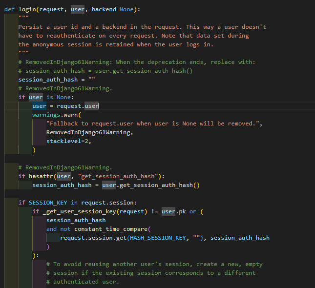

Modificacion del modelo de usuario tradicional
1. Modelo de auditorias
A mi me gusta crear una app en django que se llame core, la cual, como su nombre lo dice, sera la app que utilizare para todo el nucleo de mi sistema y para iniciar me gusta siempre crear dos cosas:
-
Un modelo que me sirva para ampliar los campos del modelo UserModel de django.
-
Un modelo abstracto que tenga campos de auditoria, estos campos ya seran a necesidad de tu sistema pero yo siempre pongo campos como: Fecha de creacion, Fecha de modificacion, Usuario creacion, Usuario Modificacion y un campo que muestre si el registro esta activo o no (util para hacer soft delete y no perder registros en la base de datos)
Entonces, como primer paso sera crear el Modelo que nos ayudara a extender el modelo de usuario que viene por defecto en django, para lograrlo haremos uso del paquete:
from django.contrib.auth.models import AbstractUser
y creamos nuestro modelo extendiendo de ese paquete:
class UserModel(AbstractUser):
pass
Para este punto es recomendable que sepas utilizar el ORM de django, los metodos de las clases en python y el como funcionan los modelos en django.
Ahora que ya tenemos nuestro modelo de usuario personalizado, podemos crear nuestro modelo abstracto de auditorias.
Los modelos abstractos de django son una forma de decir que vamos a: crear una clase padre que contenga X campos la cual nos ayudara a que futuros modelos puedan heredar de esas clase (POO tradicional) sin que django cree la tabla abstracta en la base de datos.
Para lograrlo, haremos uso de la clase Meta con la propiedad abstract = True:
class AuditModel(models.Model):
# Fecha
created_at = models.DateTimeField(auto_now_add=True)
updated_at = models.DateTimeField(auto_now=True)
# Usuario
created_by = models.ForeignKey(
UserModel,
on_delete=models.SET_NULL,
null=True,
blank=True,
related_name='created_%(class)s_set'
)
updated_by = models.ForeignKey(
UserModel,
on_delete=models.SET_NULL,
null=True,
blank=True,
related_name='updated_%(class)s_set'
)
active = models.BooleanField(
default=True, help_text="Indica si el registro está activo.", db_index=True, verbose_name="Activo")
class Meta:
abstract = True
Nota: El uso de
%(class)sen elrelated_namepermite que Django reemplace automáticamente este marcador con el nombre del modelo hijo que hereda deAuditModel, evitando así conflictos de nombres en las relaciones inversas.
Ahora solo debemos decirle a django que hemos cambiar su modelo usuario, lo cual se realiza agregando las siguientes lineas en el archivo settings.py
AUTH_USER_MODEL = 'core.UserModel'
Y finalmente estamos listos para hacer el makemigrations y migrate
python manage.py makemigrations
python manage.py migrate
2. Login de Usuarios (Nivel Basico)
Django ya viene cargado con librerias, que nos ayudan ha controlar todo el proceso de autenticacion de un usuario, estos procesos yo los seguire incluyendo en la app de core, quiere decir que tanto
-
Vistas
-
Modelos
-
Templates
-
Signals
-
URLs
Las estare programando en la app core.
2.1 Vista Login
Para hacer el login de nuestros usuarios usaremos los siguientes paquetes propios de django
from django.contrib.auth import login, authenticate
los que acabamos de importar son funciones, y siempre es bueno saber que es lo que estan haciendo esas funciones, para hacerlo, con vscode basta con poner el cursor por encima de la funcion y darle click manteniento el boton de ctrl.

Tu puedes modificar el uso de la funcion login de django para que cumpla con las necesidades o explorar, puede que encuentres como mejorar el codigo o una vulnerabilidad y tu reporte puede ayudar a mantener django seguro :) Ahora, crearemos nuestra vista para el login de usuarios:
def login_view(request):
if request.method == 'GET':
# validar que el usuario no este autenticado
if request.user.is_authenticated:
# Redirigir a la página principal si ya está autenticado
return HttpResponse("Already logged in", status=200)
return render(request, 'LoginView.html')
elif request.method == 'POST':
username = request.POST['username']
password = request.POST['password']
user = authenticate(request, username=username, password=password)
if user is not None:
login(request, user)
messages.success(request, 'Login successful')
# Redirigir a la página principal después del inicio de sesión
return HttpResponse("Login successful", status=200)
else:
return HttpResponse("Invalid credentials", status=401)
La funcion authenticate nos sirve para validar las credenciales. La funcion login se encarga de crear la sesion del usuario.
puedes encontrar mas informacion en la documentacion oficial de django
Seguido a esto debemos de agregar nuestras urls.
En el archivo settings.py agrega las siguientes variables
# Login Variables
LOGIN_URL = 'login'
LOGOUT_REDIRECT_URL = 'login'
2.2 Vista Logout
Para hacer el logout de nuestros usuarios usaremos el siguiente paquete propio de django
from django.contrib.auth import logout
def logout_view(request):
if not request.user.is_authenticated:
return redirect('login')
logout(request)
return HttpResponse("Logged out successfully", status=200)